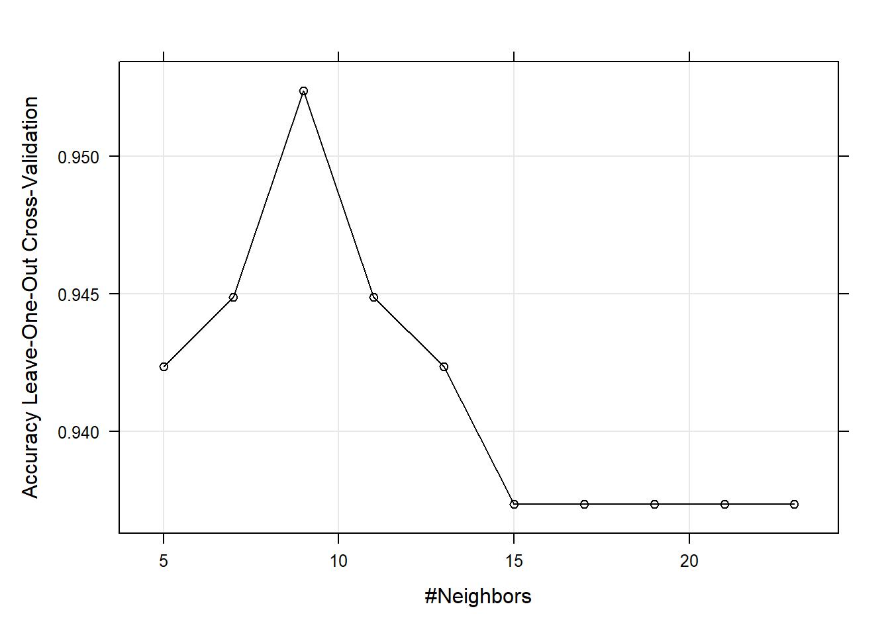

11 Máquinas de soporte vectorial
Las máquinas de soporte vectorial (SVM por sus siglas en inglés) se fundamentan en el Maximal Margin Classifier, que está basado en el concepto de hiperplano. SVM es un modelo de clasificación que mapea las observaciones como puntos en el espacio para que las categorías se dividan por dichos hiperplanos. Luego, las nuevas observaciones se pueden mapear en el espacio para la predicción. El algoritmo SVM encuentra el hiperplano de separación óptimo utilizando un mapeo no lineal a una dimensión suficientemente alta. El hiperplano se define por las observaciones que se encuentran dentro de un margen optimizado por un hiperparámetro a los que se les asigna un coste (error). Estas observaciones se denominan vectores de soporte.
11.1 Clasificador de margen máximo
El clasificador de margen máximo es el hiperplano óptimo definido en el caso (no muy habitual) en el que dos clases son linealmente separables. Dada una matriz \(X\) con dimensión \(n \times p\) y una variable respuesta binaria definida como \(y \in [-1, 1]\) es posible definir un hiperplano \(h(X) = \beta_0 + \beta_1X_1 + \beta_2X_2 \dots + \beta_pX_p = x_i^T \beta + \beta_0 = 0\) tal que todas las observaciones de cada clase caen en un lado opuesto de dicho hiperplano. Este hiperplano de separación tiene la propiedad de que si \(\beta\) está restringido al vector unidad, \(||\beta|| = \sum\beta^2 = 1\), entonces el producto del hiperplano y la variable respuesta son distancias positivas perpendiculares al hiperplano, y la menor de ellas se denomina hiperplano marginal, \(M\)
\[y_i (x_i^{'} \beta + \beta_0) \ge M.\]
El clasificador de margen máximo es el hiperplano cuyo margen es máximo \(\max \{M\}\) sujeto a \(||\beta|| = 1\). Estos hiperplano separadores raras veces existen. De hecho, incluso si existe un hiperplano separador, su margen resultante es probablemente indeseablemente estrecho. Aquí vemos un ejemplo de clasificador de margen máximo

Clasificador de margen máximo
Los datos tienen dos clases que son separables de forma lineal, \(y \in [-1, 1]\), que se pueden explicar según dos variables \(X1\) y \(X2\)

Ejemplo clasificador
11.2 Clasificador de soporte vectorial
El clasificador de margen máximo se puede generalizar a casos no separables utilizando el llamado margen blando. La generalización se denomina clasificador de vectores de soporte. El margen blando permite alguna clasificación errónea en aras de una mayor solidez de las observaciones individuales (es lo que se usa en la práctica). Aquí tenemos la diferencia entre ambos tipos de márgenes que es bastante intuitiva

Margen duro y blando
El clasificador de soporte vectorial optimiza
\[y_i (x_i^{'} \beta + \beta_0) \ge M(1 - \xi_i)\]
donde \(\xi_i\) son variables de holgura positivas cuya suma está limitada por algún parámetro de ajuste constante \(\sum{\xi_i} \le \Xi\). Los valores de la variable de holgura indican dónde se encuentra la observación: si \(\xi_i = 0\) la observacione se encuentran en el lado correcto del margen; si \(\xi_i > 0\) la observación se encuentra en el lado equivocado del margen; si \(\xi_i > 1\) la observación se encuentra en el lado equivocado del hiperplano. \(\Xi\) establece la tolerancia para la violación del margen. Si \(\Xi = 0\) entonces todas las observaciones deben residir en el lado correcto del margen, como en el clasificador de margen máximo. \(\Xi\) también controla la relación sesgo-varianza. Si \(\Xi\) aumenta, el margen se ensancha y permite más violaciones, aumentando el sesgo y disminuyendo la varianza.
El clasificador de vectores de soporte generalmente se define eliminando la restricción \(||\beta|| = 1\), y definiendo \(M = 1 / ||\beta||\). El problema de optimización se convierte en
\[\min ||\beta|| \hspace{2mm} s.t. \hspace{2mm} \begin{cases} y_i(x_i^T\beta + \beta_0) \ge 1 - \xi_i, \hspace{2mm} \forall i & \\ \xi_i \ge 0, \hspace{2mm} \sum \xi_i \le \Xi. \end{cases}\]
Esta es una ecuación cuadrática con restricciones de desigualdad lineal, por lo que es un problema de optimización convexa que se puede resolver usando multiplicadores de Lagrange. Vuelva a expresar el problema de optimización como
\[\min_{\beta_0, \beta} \frac{1}{2}||\beta||^2 = C\sum_{i = 1}^N \xi_i \\ s.t. \xi_i \ge 0, \hspace{2mm} y_i(x_i^T\beta + \beta_0) \ge 1 - \xi_i, \hspace{2mm} \forall i\]
donde el parámetro “coste”, \(C\) reemplaza la constante y penaliza los residuos grandes. Este problema de optimización es equivalente a otro problema de optimización, con la fórmula típica de pérdida + penalización:
\[\min_{\beta_0, \beta} \sum_{i=1}^N{[1 - y_if(x_i)]_+} + \frac{\lambda}{2} ||\beta||^2\]
donde \(\lambda = 1 / C\) y \([1 - y_if(x_i)]_+\) es una función de pérdida de “bisagra” con \(f(x_i) = sign[Pr(Y = +1|x) - 1 / 2].\)
Las estimaciones de los parámetros se pueden escribir como funciones de un conjunto de parámetros desconocidos \((\alpha_i)\) y los puntos de datos. La solución al problema de optimización requiere solo los productos internos de las observaciones, representados como \(\langle x_i, x_j \rangle\),
\[f(x) = \beta_0 + \sum_{i = 1}^n {\alpha_i \langle x, x_i \rangle}\]
La solución tiene la interesante propiedad de que solo las observaciones sobre o dentro del margen afectan al hiperplano. Estas observaciones se conocen como vectores de soporte. A medida que aumenta la constante, aumenta el número de observaciones infractoras y, por lo tanto, aumenta el número de vectores de apoyo. Esta propiedad hace que el algoritmo sea robusto para las observaciones extremas lejos del hiperplano.
Los estimadores de los parámetros \(\alpha_i\) son distintos de cero solo para los vectores de soporte en la solución, es decir, si una observación de entrenamiento no es un vector de soporte, entonces su \(\alpha_i\) es 0.
El único defecto del algoritmo es que presupone un límite de decisión lineal.
11.3 Máquinas de soporte vectorial
Para solventar este problema, se puede ampliar el espacio de características del clasificador de vectores de soporte a relaciones no lineales. Las máquinas de vectores de soporte hacen esto de una manera específica, utilizando kernels. El kernel es una generalización del producto interno con forma \(K(x_i, x_i^{'})\). Entonces, el kernel lineal es simplemente
\[K(x_i, x_i^{'}) = \langle x, x_i \rangle\]
y la solución es
\[f(x) = \beta_0 + \sum_{i = 1}^n {\alpha_i K(x_i, x_i^{'})}.\]
\(K\) puede tomar otra forma, por ejemplo un polinomio
\[K(x, x') = (\gamma \langle x, x' \rangle + c_0)^d\] Cuando se emplea \(\gamma=1\), \(d=1\) y \(c=0\), el resultado es el mismo que el de un kernel lineal. Si \(d>1\), se generan límites de decisión no lineales, aumentando la no linealidad a medida que aumenta \(d\). No suele ser recomendable emplear valores de \(d\) mayores 5 por problemas de overfitting.

SVM con kernel polinímico de grado 3
o una forma radial
\[K(x, x') = \exp\{-\gamma ||x - x'||^2\}.\]

11.4 SVM con e1071
Veamos un ejemplo donde reproduciremos todos los pasos que nos ayudarán a entender cómo funciona este método. Supongamos que tenemos un conjunto de datos con una variable respuesta \(y \in [-1, 1]\) que pretendemos describir según dos variables \(X1\) y \(X2\) (o que queremos predecir con dos variables).
library(tidyverse)
set.seed(1)
x <- matrix(rnorm (20*2), ncol=2)
y <- c(rep(-1, 10), rep(1, 10))
x[y==1, ] <- x[y==1, ] + 1
train_data <- data.frame(x, y)
train_data$y <- as.factor(y)El siguiente gráfico nos ilustra si las dos clases son linealmente separables
ggplot(train_data, aes(x = X1, y = X2, color = y)) +
geom_point(size = 2) +
labs(title = "Respuesta binaria con dos clases") +
theme(legend.position = "top")
La respuesta es no, no se pueden separar linealmente. Ahora estimaremos una máquina de soporte vectorial. Para ello utilizaremos la librería e1071 que implementa el algoritmo SVM mediante svm(..., kernel="linear"). Podemos cambiar el kernel a `c(“polynomial”, “radial”) y el coste a 10. Por ejemplo,
library(e1071)
m <- svm(
y ~ .,
data = train_data,
kernel = "linear",
type = "C-classification", # (default) for classification
cost = 10, # default is 1
scale = FALSE # do not standardize features
)
plot(m, train_data)
Los vectores de soporte se grafican como “x’s”. En nuestro caso hay 7
[1] 1 2 5 7 14 16 17La función summary() muestra información adicional, incluida la distribución de los vectores de soporte en las clases (4 en la -1 y 3 en la 1).
Call:
svm(formula = y ~ ., data = train_data, kernel = "linear", type = "C-classification", cost = 10,
scale = FALSE)
Parameters:
SVM-Type: C-classification
SVM-Kernel: linear
cost: 10
Number of Support Vectors: 7
( 4 3 )
Number of Classes: 2
Levels:
-1 1Los siete vectores de soporte se componen de cuatro en una clase, tres en la otra. ¿Qué pasa si reducimos el costo de las violaciones de márgenes? Esto aumentará el sesgo y reducirá la varianza.
m <- svm(
y ~ .,
data = train_data,
kernel = "linear",
type = "C-classification",
cost = 0.1,
scale = FALSE
)
plot(m, train_data)
Ahora hay muchos más vectores de soporte. (En caso de que esperara ver la formulación del límite de decisión lineal, o al menos una representación gráfica de los márgenes, siga esperando. El modelo está generalizado más allá de dos características, por lo que evidentemente no se preocupa demasiado por admitir demostraciones de dos características saneadas. )
¿Qué nivel de coste produce el mejor rendimiento predictivo ? Recordemos que para contestar a esta pregunta, utilizando los mismos datos, podemos utilizar validación cruzada. SVM tiene por defecto implementado 10-fold CV. Probaremo siete valores candidatos para el coste (argumento cost). NOTA: Para SVM el coste es el hiperparámetro que debemos estimar.
set.seed(1)
m_tune <- tune(
svm,
y ~ .,
data = train_data,
kernel ="linear",
ranges = list(cost = c(0.001, 0.01, 0.1, 1, 5, 10, 100))
)
summary(m_tune)
Parameter tuning of 'svm':
- sampling method: 10-fold cross validation
- best parameters:
cost
0.1
- best performance: 0.05
- Detailed performance results:
cost error dispersion
1 1e-03 0.55 0.4377975
2 1e-02 0.55 0.4377975
3 1e-01 0.05 0.1581139
4 1e+00 0.15 0.2415229
5 5e+00 0.15 0.2415229
6 1e+01 0.15 0.2415229
7 1e+02 0.15 0.2415229El error más bajo de valización cruzada es de 0.05 para cost=0.1. La función tune() guarda el valor del mejor mejor “tuning parameter”
Call:
best.tune(method = svm, train.x = y ~ ., data = train_data, ranges = list(cost = c(0.001,
0.01, 0.1, 1, 5, 10, 100)), kernel = "linear")
Parameters:
SVM-Type: C-classification
SVM-Kernel: linear
cost: 0.1
Number of Support Vectors: 16
( 8 8 )
Number of Classes: 2
Levels:
-1 1Ahora tenemos 16 vectores de soporte, 8 en cada clase. Esto supone un margen bastante amplio.
Estimemos ahora un modelo SVM usando otro kernel. En ese caso necesitaremos otros hiperparámetros. Por ejmplo, para el modelo poinomial, necesitaremos estimar el mejor grado del polinomio.
set.seed(1234)
m3_tune <- tune(
svm,
y ~ .,
data = train_data,
kernel ="polynomial",
ranges = list(
cost = c(0.001, 0.01, 0.1, 1, 5, 10, 100),
degree = c(1, 2, 3)
)
)
summary(m3_tune)
Parameter tuning of 'svm':
- sampling method: 10-fold cross validation
- best parameters:
cost degree
1 1
- best performance: 0.1
- Detailed performance results:
cost degree error dispersion
1 1e-03 1 0.60 0.3944053
2 1e-02 1 0.60 0.3944053
3 1e-01 1 0.30 0.2581989
4 1e+00 1 0.10 0.2108185
5 5e+00 1 0.10 0.2108185
6 1e+01 1 0.10 0.2108185
7 1e+02 1 0.10 0.2108185
8 1e-03 2 0.70 0.3496029
9 1e-02 2 0.70 0.3496029
10 1e-01 2 0.70 0.3496029
11 1e+00 2 0.50 0.3333333
12 5e+00 2 0.50 0.3333333
13 1e+01 2 0.50 0.3333333
14 1e+02 2 0.50 0.3333333
15 1e-03 3 0.60 0.3944053
16 1e-02 3 0.60 0.3944053
17 1e-01 3 0.45 0.3689324
18 1e+00 3 0.40 0.3944053
19 5e+00 3 0.50 0.3333333
20 1e+01 3 0.35 0.4116363
21 1e+02 3 0.35 0.3374743El error más bajo de valización cruzada es de 0.1 para cost=1 y grado de polinomio 1.
Call:
best.tune(method = svm, train.x = y ~ ., data = train_data, ranges = list(cost = c(0.001,
0.01, 0.1, 1, 5, 10, 100), degree = c(1, 2, 3)), kernel = "polynomial")
Parameters:
SVM-Type: C-classification
SVM-Kernel: polynomial
cost: 1
degree: 1
coef.0: 0
Number of Support Vectors: 12
( 6 6 )
Number of Classes: 2
Levels:
-1 1Ahora tenemos 12 vectores de soporte, 6 en cada clase. Esto supone un margen bastante amplio.

Para un kernel radial, tenemos que incluir el valor de gamma.
11.5 SVM con caret
El modelo también se puede ajustar usando la librería caret. Usaremos LOOCV ya que el conjunto de datos es muy pequeño. Normalizaremos las variables para que su escala sea comparable. Esta librería requiere que la variable respuesta sea factor y le pondremos etiquetas para saber cuál es cada clase. Usaremos SVM polinomial como kernel (svmPoly) .
library(caret)
library(kernlab)
train_data_3 <- train_data %>%
mutate(y = factor(y, labels = c("A", "B")))
m4 <- train(
y ~ .,
data = train_data_3,
method = "svmPoly",
preProcess = c("center", "scale"),
trControl = trainControl(
method = "cv",
number = 5,
summaryFunction = twoClassSummary, # Usaremos AUC para seleccionar el mejor modelo
classProbs=TRUE
)
)
m4$bestTune degree scale C
7 1 0.1 0.25
Ahora podríamos comprobar qué modelo predice mejor en los datos test (que también generamos aleatoriamente:
set.seed(1234)
x <- matrix(rnorm (20*2), ncol=2)
y <- c(rep(-1, 10), rep(1, 10))
x[y==1, ] <- x[y==1, ] + 1
test_data <- data.frame(x, y)
test_data$y <- as.factor(y)
test_data$yFac <- factor(test_data$y, labels = c("A", "B"))Confusion Matrix and Statistics
Reference
Prediction -1 1
-1 10 7
1 0 3
Accuracy : 0.65
95% CI : (0.4078, 0.8461)
No Information Rate : 0.5
P-Value [Acc > NIR] : 0.13159
Kappa : 0.3
Mcnemar's Test P-Value : 0.02334
Sensitivity : 1.0000
Specificity : 0.3000
Pos Pred Value : 0.5882
Neg Pred Value : 1.0000
Prevalence : 0.5000
Detection Rate : 0.5000
Detection Prevalence : 0.8500
Balanced Accuracy : 0.6500
'Positive' Class : -1
Confusion Matrix and Statistics
Reference
Prediction -1 1
-1 10 6
1 0 4
Accuracy : 0.7
95% CI : (0.4572, 0.8811)
No Information Rate : 0.5
P-Value [Acc > NIR] : 0.05766
Kappa : 0.4
Mcnemar's Test P-Value : 0.04123
Sensitivity : 1.000
Specificity : 0.400
Pos Pred Value : 0.625
Neg Pred Value : 1.000
Prevalence : 0.500
Detection Rate : 0.500
Detection Prevalence : 0.800
Balanced Accuracy : 0.700
'Positive' Class : -1
Confusion Matrix and Statistics
Reference
Prediction A B
A 10 8
B 0 2
Accuracy : 0.6
95% CI : (0.3605, 0.8088)
No Information Rate : 0.5
P-Value [Acc > NIR] : 0.25172
Kappa : 0.2
Mcnemar's Test P-Value : 0.01333
Sensitivity : 1.0000
Specificity : 0.2000
Pos Pred Value : 0.5556
Neg Pred Value : 1.0000
Prevalence : 0.5000
Detection Rate : 0.5000
Detection Prevalence : 0.9000
Balanced Accuracy : 0.6000
'Positive' Class : A